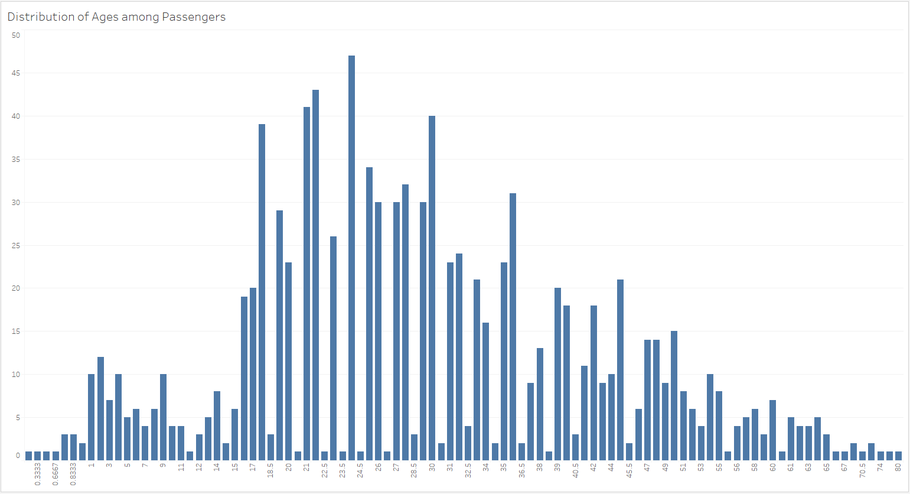

Tragedy at Sea: Analyzing Titanic Passenger Data
Resources
Data source: titanic3.xls
Software: Tableau Desktop Public Edition Version
2023.1
Project Objective
Use the
provided data to create a dashboard to tell the best possible data driven story.
Processing and
Visualization
After inspecting the csv file, I connected it to
Tableau as an Excel file.
Next, I reviewed the measures and dimensions and
noticed that some of them were categorized incorrectly. The image on the left is the before and the image on the
right is the after.


The histogram illustrates the distribution of
passenger ages in the dataset. The majority of passengers fall in the 18 to 35 age range.

Since there were a wide range of ages in the
dataset, I decided to group them into specific ranges.

Drawing Insights
- There were 1,309 total passengers on the
Titanic, not including the 900+ crew members.
- The age group with the highest representation
among passengers were those between 18 and 35, accounting for 43.5% of the total passenger count.
- The average age and fare for all passengers
was 29.9 years old and $33.30.
- The majority of the passengers were
third-class males from Southampton, England in the United Kingdom, many of whom were traveling alone or were
single.
- It appears that passengers in age groups 0-17
and 45-64 had higher average survival rates, possibly because they included children and parents who were
prioritized for rescue. In contrast, age groups 18-35 and 36-44 had lower average survival rates, likely due
to the higher proportion of third-class single males among these age ranges. It is worth noting that the
average survival rate for the 65-80 age range may be unreliable, as this group represents only 1% of the
total passengers.
Return to the Homepage